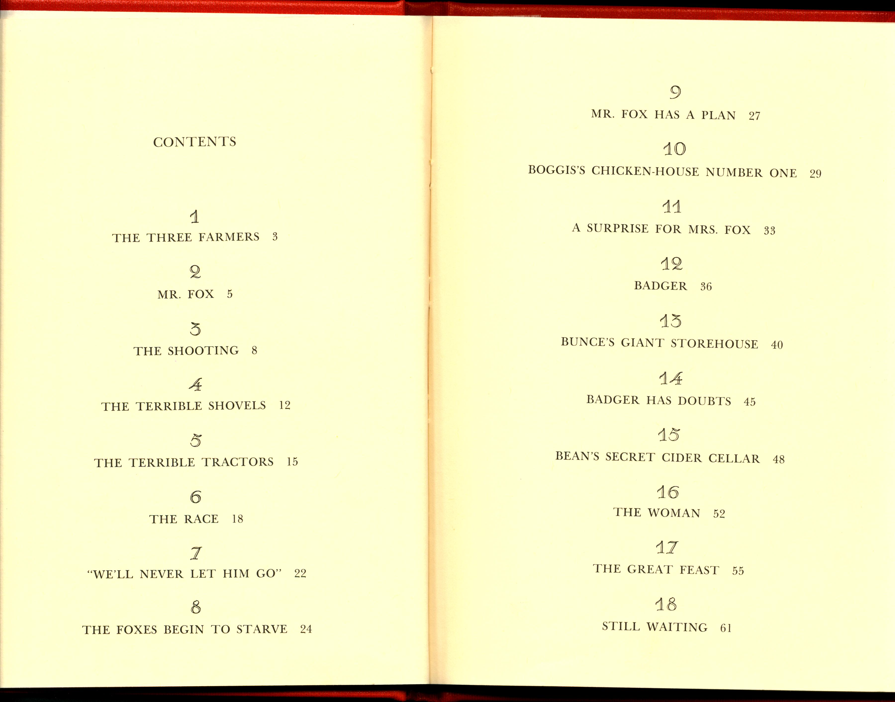

Home
Navigate the Text

Lost?
Table of Contents
Click on a chapter to go to a page within it.
- The Three Farmers
- Mr. Fox
- The Shooting
- The Terrible Shovels
- The Terrible Tractors
- The Race
- "We'll Never Let Him Go"
- The Foxes Begin to Starve
- Mr. Fox Has a Plan
- Boggis's Chicken-House Number One
- A Surprise for Mrs. Fox
- Badger
- Bunce's Giant Storehouse
- Badger Has Doubts
- Bean's Secret Cider
- The Woman
- The Great Feast
- Still Waiting